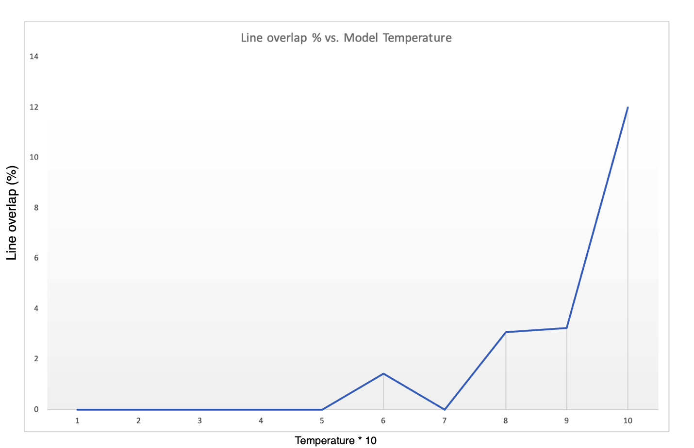

JEN, A LYRIC GENERATION TOOL
Jasper Gilley
jaspergilley2021@u.northwestern.edu
Final project for Prof. Pardo's CS396 class at Northwestern University, fall quarter 2020.
SUMMARY
Jen is a lyric generation tool capable of writing song lyrics in the style of contemporary popular music. I trained an instance of OpenAI’s GPT-2 model on a large dataset of song lyrics from a wide variety of musical genres. This project shows that learning models are capable of at least emulating human-created art in the realm of natural language, if certainly not emulating the reasons behind creating it.
RESULTS
With a dataset of the lyrics of 114,723 English-language songs found on Kaggle, Jen is capable of replicating lyrics in nearly any genre. Because of the quantity available and because of genre idioms, however, Jen works particularly well on rap lyrics. Here is an example of Jen's rapping:
When it rains it makin' silver raining
When it rained bullets it pimpin' tippin'
I turn this city around and I run it
I turn this city around and I run it I was sick of them popping caper
And hiding out of town
When nobody came to party
I made my town my vacation
When nobody came to party
I made my town my vacation
When nobody came to party
I made my town my vacation I was sick of them popping caper
One can observe idiomatic vocabulary in this sample, along with more emergent idiomatic features like similar line endings and repetition of material. .
EVALUATION
Jen was evaluated by three metrics: test-set perplexity, next word prediction accuracy, and line overlap detection. Test set perplexity is a measure of how "surprised" we should be to find a line in a dataset. By this metric, Jen scores a 278, slightly worse than can be found in many similar published papers. By the metric of next word prediction, performs at 38.7% accuracy on the rap lyrics tuning dataset, which is also in line with expectations. Finally, by tuning Jen correctly, we find that we can eliminate direct drawing from the tuning dataset, as can be seen in this plot of direct drawing versus the "temperature" hyperparameter.

PAPER
You can read the full paper describing Jen in more detail here.